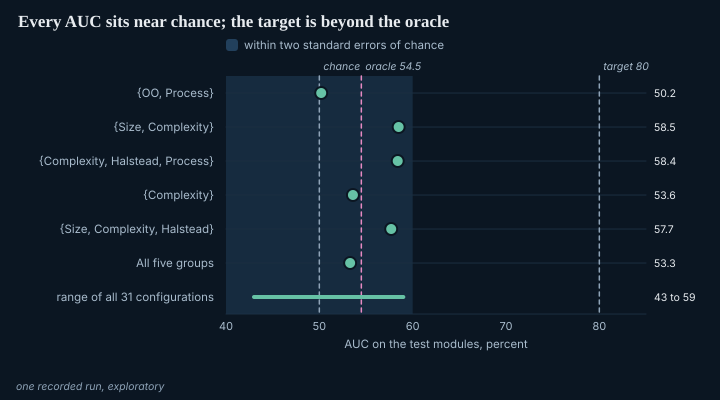
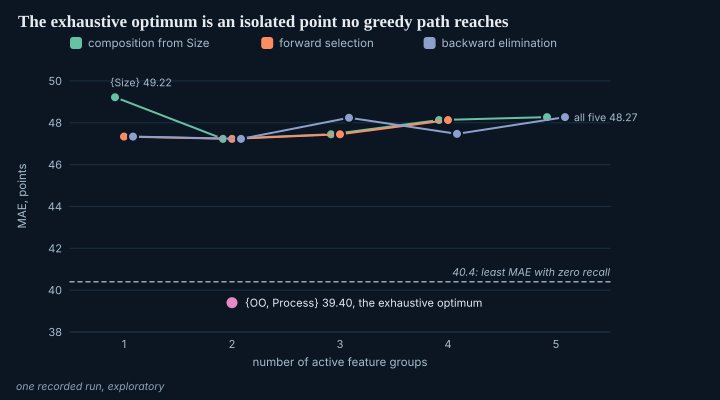

Chapter 19: Case Study — Software Defect Prediction
“All models are wrong, but some are useful.” — George E. P. Box (1976)
Chapter 1 opened this book with a motivating example: a defect prediction model evaluated at 84% accuracy, and the long list of questions that scalar metric could not answer. The intervening chapters developed the geometric tools—subset enumeration, Pareto frontier analysis, sensitivity profiling, the Model Robustness Index, adversarial threshold search—needed to ask and answer those questions rigorously. This chapter brings the full toolchain to bear on a single, complete worked example. We start with a dataset, build an evaluation function, run the entire structural fuzzing campaign, and interpret every output. The goal is not merely to demonstrate the API but to show how geometric reasoning transforms the practice of model validation: from a single number to a multi-dimensional portrait of model behavior, fragility, and opportunity.
The dataset is a synthetic analogue of the KC1 module from the NASA Metrics Data Program, distributed through the PROMISE repository. KC1 contains software metrics—lines of code, cyclomatic complexity, Halstead measures, object-oriented coupling and cohesion, process history—for roughly 2,000 C++ modules, each labeled as defective or clean. We use a synthetic generator whose feature families follow KC1’s and whose causal structure is set by hand (Section 19.1.2), which makes the example fully reproducible without external data. It is not fitted to KC1. The generator lives in the framework’s example directory.
19.1 The Dataset and Feature Groups
19.1.1 Feature Architecture
Software defect prediction datasets typically contain between 15 and 40 metrics per module. These metrics are not independent: lines of code correlates with Halstead volume, cyclomatic complexity correlates with essential complexity, revision count correlates with churn. Treating all 16 features as independent dimensions would produce a 16-dimensional state space—far too large for exhaustive geometric analysis, and structurally misleading because it would treat correlated features as orthogonal.
The structural fuzzing framework resolves this by organizing features into groups, each corresponding to a single dimension of the analysis space. The grouping for defect prediction follows the taxonomy established by the software engineering literature:
FEATURE_GROUPS = {
"Size": [0, 1, 2], # LOC, SLOC, blank_lines
"Complexity": [3, 4, 5], # cyclomatic, essential_complexity, design_complexity
"Halstead": [6, 7, 8, 9], # halstead_volume, difficulty, effort, time
"OO": [10, 11, 12], # coupling, cohesion, inheritance_depth
"Process": [13, 14, 15], # revisions, authors, churn
}
Five groups, sixteen features, one dimension per group. The analysis space is $\mathbb{R}^5$, small enough for exhaustive subset enumeration yet rich enough to capture the structural questions that matter: which combinations of metric families predict defects? Which are redundant? Where are the fragility boundaries?
The grouping itself is a modeling decision. One could split Halstead into “volume” and “effort” sub-groups, or merge Size and Halstead into a single “scale” dimension. Chapter 1 discusses the principles for constructing dimension groupings. Here, we follow the standard five-group decomposition because it aligns with the domain taxonomy and produces a space small enough for exhaustive analysis.
19.1.2 Ground Truth Structure
The synthetic data generator encodes a specific causal structure that mirrors findings from the empirical software engineering literature:
- Complexity metrics are strongly predictive. Cyclomatic complexity, essential complexity, and design complexity are the primary drivers of defect probability. This reflects decades of empirical evidence that complex code is defect-prone code.
- Process metrics are strongly predictive. The number of revisions, distinct authors, and code churn capture the development history of a module. Modules that change frequently, by many hands, accumulate defects.
- Size metrics are weakly predictive. Lines of code correlates with defect count (larger modules have more opportunities for defects) but contributes modestly after controlling for complexity.
- Halstead metrics are moderately predictive but largely because they correlate with size. Their independent contribution is limited.
- Object-oriented metrics are noise. In this dataset, coupling, cohesion, and inheritance depth have no causal relationship to defect probability. They are included to test whether the geometric analysis correctly identifies them as uninformative.
The defect probability for each module is computed via a logistic model:
$$p(\text{defect}) = \sigma\!\left(-3 + 0.10\log(1 + \text{cyc}) + 0.15\log(1 + \text{ess}) + 0.05\log(1 + \text{des}) + 0.12\log(1 + \text{rev}) + 0.10\log(1 + \text{auth}) + 0.08\log(1 + \text{churn}/100) + 0.03\log(1 + \text{loc}/1000) + \varepsilon\right)$$
where $\sigma$ is the sigmoid function and $\varepsilon \sim \mathcal{N}(0, 0.25)$, a variance of 0.25 and a standard deviation of 0.5. The coefficients make the ground truth explicit: Complexity and Process dominate, Size contributes marginally, OO contributes nothing.
The coefficients are also small. Across the 1,000 modules, the part of the logit that the features determine has mean $-1.99$ and standard deviation 0.11, against noise with standard deviation 0.5. No module’s defect probability, as far as its features determine it, exceeds 0.16. Used as an oracle on the test split of Section 19.2.2, the generator’s own formula reaches an AUC of 0.545 (formal/runs/ch19_oracle.py). The structure is real but faint. Whether a campaign can recover it from 1,000 modules is an empirical question, and Section 19.5 answers it.
19.1.3 Generating the Data
from examples.defect_prediction.model import generate_defect_data, FEATURE_NAMES
X, y = generate_defect_data(n_samples=1000, seed=42)
print(f"Features: {X.shape}") # (1000, 16)
print(f"Defect rate: {y.mean():.2%}") # 12.10%
print(f"Feature names: {FEATURE_NAMES}")
The generator produces 1,000 modules with 16 features each and a binary defect label. The defect rate is 12.1%. Of the 300 test modules, 36 are defective, so a model that predicts “no defect” for every module is 88% accurate. The seed parameter ensures exact reproducibility.
19.2 Building the Evaluation Function
The structural fuzzing framework communicates with models through a single interface: the evaluation function. This function takes a parameter vector $\mathbf{p} \in \mathbb{R}^n$ (one entry per dimension) and returns a scalar MAE along with a dictionary of per-target errors. The design of this interface is discussed in Chapter 16; here we implement it for defect prediction.
19.2.1 The evaluate_fn Contract
The evaluation function must satisfy three properties:
-
Determinism. Given the same parameter vector, the function must return the same result. Stochastic models should fix their random seed at construction time, not at evaluation time.
-
Inactive-dimension semantics. If
params[i] >= 1000, dimension $i$ is considered inactive—its features are excluded from the model. This is the sentinel convention used throughout the framework. -
Error semantics. Each entry in the errors dictionary represents
predicted - targetfor one quality metric. Positive values mean the model exceeds the target; negative values mean it falls short.
19.2.2 Implementation
The make_evaluate_fn factory in the example module constructs a complete evaluation function:
from examples.defect_prediction.model import make_evaluate_fn, GROUP_NAMES
evaluate_fn = make_evaluate_fn(n_samples=1000, test_fraction=0.3, seed=42)
Internally, the factory:
- Generates 1,000 synthetic modules using
generate_defect_data. - Splits them 70/30 into training and test sets with a fixed random permutation.
- Defines quality targets: Accuracy >= 75%, Precision >= 70%, Recall >= 65%, F1 >= 67%, AUC >= 80%.
- Returns a closure that, for each parameter vector:
- Identifies active feature groups (those with
params[i] < 1000). - Selects the corresponding feature columns from the training and test matrices.
- Trains a 50-tree random forest classifier on the active features.
- Computes all five metrics on the test set.
- Returns MAE (mean absolute deviation from targets) and per-metric errors.
The key insight is that the parameter vector controls which feature groups are active, not the internal hyperparameters of the random forest. This is the structural fuzzing paradigm: instead of searching over model configurations, we search over input structures—which combinations of information the model receives—and measure how model behavior changes as a function of that structure.
19.2.3 A Quick Sanity Check
Before launching the full campaign, it is good practice to verify the evaluation function with a few spot checks:
import numpy as np
# All groups active
params_all = np.ones(5)
mae_all, errors_all = evaluate_fn(params_all)
print(f"All groups: MAE={mae_all:.4f}")
for name, err in errors_all.items():
print(f" {name}: {err:+.2f}")
# Only Complexity active
params_cx = np.full(5, 1e6)
params_cx[1] = 1.0 # Complexity is index 1
mae_cx, errors_cx = evaluate_fn(params_cx)
print(f"\nComplexity only: MAE={mae_cx:.4f}")
# Only OO active (expected: poor performance)
params_oo = np.full(5, 1e6)
params_oo[3] = 1.0 # OO is index 3
mae_oo, errors_oo = evaluate_fn(params_oo)
print(f"OO only: MAE={mae_oo:.4f}")
The expectation was that the all-groups configuration would score best, Complexity alone reasonably well, and OO alone poorly. The recorded run gives MAEs of 48.27, 47.34 and 48.84: the three are within 1.5 points of one another, and Complexity alone beats the full model. That is the first sign of what Section 19.5 explains. The checks pass in the sense that nothing fails to run, and fail in the sense that they cannot tell a useful configuration from a useless one. A spot check is only a check if it states in advance what result would count as failure; here a sensible rule would be that OO alone must score clearly worse than Complexity alone, and it does not.
A second check belongs here too: that the parameter values, and not only their on/off pattern, reach the model. Evaluate params_all with every entry set to 1.0 and again with every entry set to 50.0. This function returns the same score for both, which Section 19.7 shows is decisive for the robustness stages.
19.3 Running the Full Campaign
With the evaluation function constructed and verified, we launch the complete structural fuzzing campaign. The run_campaign function in structural_fuzzing.pipeline orchestrates all six analysis stages in sequence.
19.3.1 Campaign Configuration
from structural_fuzzing.pipeline import run_campaign
from examples.defect_prediction.model import GROUP_NAMES
report = run_campaign(
dim_names=GROUP_NAMES, # ["Size", "Complexity", "Halstead", "OO", "Process"]
evaluate_fn=evaluate_fn,
max_subset_dims=4, # enumerate subsets up to size 4
n_mri_perturbations=300, # 300 random perturbations for MRI
mri_scale=0.5, # log-space perturbation scale
mri_weights=(0.5, 0.3, 0.2), # MRI weighting: mean, P75, P95
start_dim=0, # compositional test starts from Size
run_baselines=True, # include forward/backward selection
adversarial_tolerance=0.5, # flag >0.5 change in any metric
verbose=True,
)
The max_subset_dims=4 setting enumerates all subsets of size 1 through 4 out of 5 dimensions. This produces $\binom{5}{1} + \binom{5}{2} + \binom{5}{3} + \binom{5}{4} = 5 + 10 + 10 + 5 = 30$ configurations, plus the single size-5 configuration tested during sensitivity profiling. The subset search optimizes the parameter values of each configuration as well (Chapter 11), with grid or random search, and the other stages add their own evaluations. The recorded campaign called the evaluation function 189,462 times. Each call fits a 50-tree random forest, so run naively the campaign takes hours. But this evaluation function depends only on which groups are active, so the calls reduce to the 32 on/off patterns, and the recorded run caches on that pattern; the cache was checked against 400 uncached calls on random parameter vectors, with no difference (formal/runs/ch19_defect_campaign.py). With the cache the campaign took 2.5 seconds.
19.3.2 The Six-Stage Pipeline
The campaign executes the following stages, each corresponding to a technique developed in an earlier chapter:
| Stage | Chapter | Operation |
|---|---|---|
| 1. Subset enumeration | Ch 11 | Test all $\binom{5}{k}$ subsets for $k = 1, \ldots, 4$ |
| 2. Pareto frontier | Ch 8 | Identify non-dominated (dimensionality, MAE) tradeoffs |
| 3. Sensitivity profiling | Ch 9 | Ablate each dimension and measure MAE impact |
| 4. Model Robustness Index | Ch 9 | Perturb baseline 300 times, compute MRI |
| 5. Adversarial thresholds | Ch 9 | Search for tipping points per dimension |
| 6. Compositional testing | Ch 12 | Greedy dimension-addition sequence |
The StructuralFuzzReport dataclass returned by run_campaign contains the complete results from all six stages, along with optional forward-selection and backward-elimination baselines. The report’s summary() method produces a formatted text output, and the report module provides LaTeX table generation for publication.
19.4 The Recorded Run
Every number in Sections 19.4 to 19.9 comes from runs recorded on 16 November 2026 with structural-fuzzing 0.4.0, scikit-learn 1.8.0, NumPy 2.4.4 and Python 3.12.3, using the configuration of Section 19.3.1. The scripts are in formal/runs/ (ch19_defect_campaign.py, ch19_oracle.py, ch19_redraw.py) and their outputs in the JSON files beside them. An earlier version of this chapter printed “typical output” that no run had produced. The recorded output differs from it in almost every respect, and the differences are the lessons of the chapter.
19.4.1 The Enumeration Table
The best five of the 30 configurations, with the five single groups and the full model for comparison. Metrics are percentages on the 300 test modules; the MAE is the mean absolute distance from the five targets.
| Configuration | MAE | Accuracy | Precision | Recall | F1 | AUC |
|---|---|---|---|---|---|---|
| {OO, Process} | 39.40 | 88.3 | 100.0 | 2.8 | 5.4 | 50.2 |
| {Size, Complexity} | 47.23 | 87.7 | 0.0 | 0.0 | 0.0 | 58.5 |
| {Complexity, Halstead, Process} | 47.25 | 87.7 | 0.0 | 0.0 | 0.0 | 58.4 |
| {Complexity} | 47.34 | 83.3 | 0.0 | 0.0 | 0.0 | 53.6 |
| {Size, Complexity, Halstead} | 47.45 | 88.0 | 0.0 | 0.0 | 0.0 | 57.7 |
| {Size} alone | 49.22 | |||||
| {Halstead} alone | 48.80 | |||||
| {OO} alone | 48.84 | |||||
| {Process} alone | 48.27 | |||||
| All five groups | 48.27 | 87.7 | 0.0 | 0.0 | 0.0 | 53.3 |
| No groups | 71.40 |
Two things are wrong with this table before any geometry is applied. Every configuration but one has precision, recall and F1 of zero: it finds none of the 36 defective test modules. And the one exception, the best configuration, contains the OO group, which the generator makes pure noise.
19.5 Why Every Configuration Scores Alike
19.5.1 The Targets Cannot Be Met
The defect rate is 12.1%, so a model that predicts “no defect” for every test module is 88.0% accurate. The random forest predicts a defect when its estimated probability exceeds one half, and Section 19.1.2 showed that no module’s defect probability, as far as its features determine it, exceeds 0.16. A classifier that has learned the generator correctly should therefore predict “no defect” almost everywhere. Thirty of the 31 configurations find none of the 36 defective modules: their recall is zero, and so are their precision and F1, since any defects they do predict are wrong. Each of them has an MAE of at least $(70 + 65 + 67)/5 = 40.4$, whatever its accuracy and AUC. The targets of Section 19.2.2 ask for precision of 70%, recall of 65% and AUC of 80%. The generator’s own formula, used as an oracle, reaches an AUC of 54.5% on the same test modules. No model can meet these targets on these data, including the true one.
The differences that remain are in accuracy and AUC, and they are small against their noise. With 36 defective and 264 clean modules, the standard error of an AUC near 0.55 is about 0.05 (Hanley and McNeil, 1982). The 31 configurations span AUCs from 43% to 59%, all within two standard errors of chance.

Figure 19.1. AUC on the 300 test modules for the six configurations whose AUC the table of Section 19.4.1 prints, in percent. The shaded band is two standard errors either side of chance, with the standard error of about 5 points given in Section 19.5.1. The bar under the rows is the range of all 31 configurations, 43 to 59. The generator’s own formula, used as an oracle, reaches 54.5, and the target the evaluation function scores against is 80. Measured on one recorded run; exploratory, since no prediction was registered before it.
19.5.2 The Winner Is a Draw
{OO, Process} wins because it made exactly one positive prediction and that prediction was right: precision 100%, recall one in 36. That single module lowers its MAE by eight points and puts it first. It was chosen on the same 300 modules that score it, so its rank is a property of those modules.
That can be tested directly by drawing the data again. Over 20 seeds of the same generator, each giving a new dataset and a new split, 15 different configurations win. The most frequent winner, Process alone, wins three times. Eight of the 20 winners contain OO, close to what chance gives, since OO appears in 16 of the 31 configurations (ch19_redraw.json). The campaign’s choice of best configuration carries no information about the generator.
19.6 Pareto, Sensitivity and Composition
Pareto frontier. Two points: {Complexity} at MAE 47.34 with one group, and {OO, Process} at 39.40 with two. The second is the draw of Section 19.5.2.
Sensitivity. The profile ablates each group from the best configuration. Removing Process raises the MAE to 48.84 (+9.44) and removing OO raises it to 48.27 (+8.87); Size, Complexity and Halstead are already off, so removing them changes nothing. The profile ranks OO as the second most important group. That is true of this test set and false of the generator.
Composition and the baselines. Starting from Size, the compositional test adds Complexity (47.23), Halstead (47.45), Process (48.13) and OO (48.27). Forward selection starts from Complexity (47.34) and adds Size (47.23), Halstead (47.45) and Process (48.13). Backward elimination starts from all five (48.27) and removes Halstead (47.47), OO (48.24), Process (47.23) and Size (47.34). None of the three greedy paths ever reaches {OO, Process}. The exhaustive optimum is an isolated point whose neighbours score like everything else, which is the signature of a lucky draw and not of structure in the data. When exhaustive and greedy searches disagree this sharply, the disagreement is itself a diagnostic.

Figure 19.2. MAE of every configuration the three greedy searches of Section 19.6 visit, against the number of active feature groups. Where two paths pass through the same configuration their markers are drawn side by side. All of them lie between 47.2 and 49.3, above the floor of 40.4 that any configuration with zero recall must have. The exhaustive optimum, {OO, Process} at 39.40, is below that floor because of one correct positive prediction, and no greedy path reaches it. Measured on one recorded run; exploratory.
19.7 The Model Robustness Index
The recorded MRI is $0.0000$, with mean, 75th-percentile and 95th-percentile deviations all exactly zero, and a worst-case MAE of 39.40, the baseline itself.
This is not robustness. The evaluation function reads each parameter only to ask whether it is below 1000, so its value depends only on which groups are on. The MRI multiplies the parameters by $e^{\varepsilon}$ with $\varepsilon \sim \mathcal{N}(0, 0.5^2)$. The active groups of the best configuration sit at 0.01 and would need a factor of $10^5$ to reach 1000; the inactive ones sit at $10^6$ and would need a factor of $10^{-3}$. Neither happened in 300 draws, and neither will in practice. Even if the function did use the values, scaling a feature by a constant does not change any split of a random forest, so it could not have mattered. The campaign called the evaluation function 189,462 times, and those calls produced 32 distinct models, one for each on/off pattern.
An MRI of zero therefore says that the evaluation function cannot see the perturbation, not that the model withstands it. Section 21.4 calls this a design that cannot fail, and gives the one-line test that catches it.
19.8 Adversarial Thresholds
The search found no thresholds. It scales each parameter by up to a factor of 1000 in each direction and records the first value at which any metric moves by more than 0.5. Every value scored alike, so the subset optimizer kept the first grid point, 0.01, for each active group; a thousandfold increase reaches 10, still below the 1000 that switches a group off. For an inactive group, a thousandfold decrease of $10^6$ reaches exactly 1000, which still counts as off. No step crosses the only boundary the function can see.
19.9 Making the Parameter Matter
The robustness stages of Sections 19.7 and 19.8 had nothing to measure, because the package’s evaluation function cannot see the parameter values. A small change gives it something to see. In the variant below, each feature is log-transformed and standardized on the training split, group $g$ is scaled by $1/\sqrt{p_g}$, and an $L^2$-penalized logistic regression is fitted, with classes weighted to balance them. Scaling a feature by $1/\sqrt{p}$ under an $L^2$ penalty is the same as giving its coefficient a Gaussian prior with precision proportional to $p$, so each parameter is the prior precision of its group’s coefficients, which is the meaning Chapter 2 gives to a weight. The sentinel still switches a group off. Data, split, targets and campaign are those of Section 19.3.
def evaluate_fn(params):
cols, scale = [], []
for g, members in enumerate(FEATURE_GROUPS.values()):
if params[g] < 1000:
cols += members
scale += [1.0 / np.sqrt(params[g])] * len(members)
if not cols:
... # as in the package example
A = Z[:, cols] * np.asarray(scale) # Z: log1p features, standardized on train
m = LogisticRegression(C=1.0, class_weight="balanced", max_iter=2000)
m.fit(A[train], y[train])
... # metrics and errors as before
The full function is weighted_evaluate_fn in formal/runs/ch19_defect_campaign.py. With it, the same campaign made 189,094 evaluations, each a fresh fit, in 72 minutes.
| Stage | Recorded result |
|---|---|
| Best configuration | {Size, Complexity, Halstead, OO}, MAE 25.80, with precisions 69.1, 67.0, 6.6 and 11.0 |
| Pareto frontier | {Complexity} 28.37; {Complexity, OO} 27.49; {Complexity, Halstead, OO} 26.17; the best configuration, 25.80 |
| Sensitivity (removing each group) | Complexity +9.68, OO +5.34, Halstead +3.65, Size +0.76, Process 0 (already off) |
| MRI | 2.06 (mean 1.55, 75th percentile 2.18, 95th percentile 3.15); worst case 30.26 |
| Thresholds | Size and Complexity at $\times 1.15$ and $\times 0.87$; Halstead at $\times 3.09$ and $\times 0.57$; OO at $\times 2.02$ and $\times 0.66$ |
| Composition from Size | 32.83, 28.40, 27.34, 25.92, 29.27 (adding Complexity, OO, Halstead, Process) |
Every stage now reports something, and the reports agree with one another: the configuration found by the search is fragile, its two largest parameters tip within 15% of their tuned values, and the MRI is large. What they agree about is the search, not the generator. The parameters were tuned on the 300 test modules that also score them, and a 0.5-point change in accuracy, the threshold tolerance, is two of those modules. The thresholds measure how finely the tuning has fitted this test set. OO, which the generator makes pure noise, again ranks second in the sensitivity profile, and Process, which drives the generator, is switched off in the best configuration.
The variant therefore shows what the stages are for once they can see the parameter, and it shows the lesson of Section 19.5 a second time. A robustness analysis of a configuration chosen on its test data measures the choice. To measure the model, tune on one split and run the campaign’s robustness stages on another.
19.10 Complete Walkthrough: From Data to Actionable Insights
19.10.1 The Full Script
The following script combines all preceding steps into a single, self-contained workflow:
"""Complete structural fuzzing analysis for defect prediction."""
import numpy as np
from examples.defect_prediction.model import (
GROUP_NAMES,
make_evaluate_fn,
)
from structural_fuzzing.pipeline import run_campaign
# Step 1: Build the evaluation function
evaluate_fn = make_evaluate_fn(n_samples=1000, test_fraction=0.3, seed=42)
# Step 2: Run the full campaign
report = run_campaign(
dim_names=GROUP_NAMES,
evaluate_fn=evaluate_fn,
max_subset_dims=4,
n_mri_perturbations=300,
mri_scale=0.5,
mri_weights=(0.5, 0.3, 0.2),
start_dim=0,
run_baselines=True,
adversarial_tolerance=0.5,
verbose=True,
)
# Step 3: Print the full report
print(report.summary())
The entire analysis—subset enumeration with the parameter search inside each subset, Pareto frontier extraction, sensitivity profiling, 300 MRI perturbations, threshold search across 5 dimensions, compositional testing, and forward/backward baselines—is one function call, which made 189,462 calls to the evaluation function in the recorded run. The summary() method produces a complete text report suitable for stakeholder communication.
19.10.2 Generating LaTeX Output
For publication or formal reporting, the format_latex_tables function generates publication-ready tables:
from structural_fuzzing.report import format_latex_tables
latex = format_latex_tables(report)
with open("defect_prediction_tables.tex", "w") as f:
f.write(latex)
This produces three tables: the Pareto frontier, the sensitivity ranking, and the MRI summary, each with proper \toprule/\midrule/\bottomrule formatting and descriptive captions.
19.10.3 What the Campaign Actually Supports
Read with Sections 19.5 to 19.9 in hand, the campaign supports four conclusions, and none of them is about which feature groups to use.
- Compute what the best possible model scores before setting targets. Here the generator’s own formula reaches an AUC of 0.545 and predicts no defects at a threshold of one half. Targets of 80% AUC, 70% precision and 65% recall cannot be met, so the MAE ranks configurations by noise.
- Choose a configuration on data that do not score it. The best configuration won on one test module, and over 20 redraws of the same generator 15 different configurations won. Report how often the winner wins across redraws, or select on a validation split and score on a test split.
- Check that the parameters reach the model. In the package’s evaluation function they do not, so the robustness index and the threshold search are zero and empty by construction (Sections 19.7 and 19.8). The variant of Section 19.9 shows what the same stages report once they do.
- Let the stages check each other. The signs were there in the campaign’s own output: three greedy searches that never reach the exhaustive optimum, an AUC spread within two standard errors of chance, and a robustness index of exactly zero.
19.11 Lessons Learned
19.11.1 The Campaign Did Not Recover the Ground Truth, and Could Not
The generator says that Complexity and Process drive defects and OO is noise. The campaign put OO in its best configuration and ranked it second in importance. This is not a fault of the geometry. With 36 defective test modules and a signal whose standard deviation is less than a quarter of the noise’s, no procedure that ranks configurations by their score on one test set can recover a ranking of groups. A campaign is an instrument, and an instrument has a resolution. Before reading a campaign’s ranking as a finding, compare the differences it reports with the noise in the score; here the noise is about five AUC points and the differences are smaller.
19.11.2 Negative Results Are Results
An earlier version of this chapter reported that the analysis recovered the generator’s structure precisely. It did not, and the record now says so. The negative result is more useful than the invented positive one: it identifies three checks, on the targets, on the selection and on the parameters, that a reader can apply to any campaign before trusting it.
19.11.3 Zero Is Not Robustness
A robustness index of zero is the best possible score, and here it means that the evaluation function cannot see the perturbation. Every robustness statistic is a measurement of a function, and a function that ignores its argument is perfectly robust. The witness of Section 21.4, two parameter vectors that must give different scores, separates the two cases in one line.
19.11.4 Geometry Composes, and So Do Its Failures
Each stage anchors on the best configuration: sensitivity ablates from it, the MRI perturbs around it, the threshold search moves away from it. When that configuration is a draw, every stage inherits the draw, and their agreement adds nothing. Agreement between stages is evidence only when the stages could have disagreed.
19.11.5 The Framework Scales
The five-dimensional case study in this chapter is deliberately small. For $n$ dimensions with max_subset_dims = k, the enumeration cost is $\sum_{j=1}^{k} \binom{n}{j}$ configurations, which grows polynomially for fixed $k$. With $k = 3$ and $n = 10$ this is $10 + 45 + 120 = 175$ configurations, still feasible. For $n = 20$ or beyond, the greedy approaches (forward selection, backward elimination, compositional testing) serve as practical approximations; Chapter 17 discusses scaling strategies. What does not scale away is the resolution problem of Section 19.11.1: more dimensions make it worse, because more configurations compete for the same noisy score.
19.12 Connection to What Follows
This chapter demonstrated the complete geometric toolchain on a single domain. The analysis followed a fixed protocol: build an evaluation function, run the campaign, interpret the results. But the protocol itself raises questions that the remaining chapters address.
Chapter 20 carries the same campaign to a different domain and a different kind of model: a decoder of sperm whale codas built from the SPD, topological and hyperbolic methods of Part I, and validated with the robustness and probing tools of Part II.
The defect prediction example showed what geometry reveals when applied to a single model in a single domain. The next chapter shows what the same tools reveal when the features themselves are geometric objects.